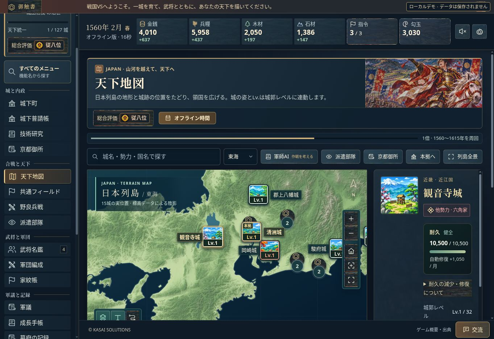

Personal campaign
Build up your realm and fight computer-controlled factions on your own campaign map. “Play only on this device” lets you begin without registering a lord. Progress is saved in that browser.
A strategy game set in Sengoku Japan
From one castle, build your realm.
Choose your home castle, develop its town and lead your officers into the next campaign. Read your adviser’s suggestions, balance your resources and decide where to advance.
The game is in Japanese. This page explains the first steps in English. The game interface and full guides are currently Japanese only.

Inside the game

Manage facilities and the resources that support your realm.

Compare abilities and assign officers to your army or town.

Read the terrain, inspect a castle and prepare your forces.
Actual game screens captured with demo progress on November 26, 2026. The castle-town image shows Nagoya Castle in version 5.1.0; other screens were captured in version 5.0.5. The interface may change with updates.
Your first castle
For a first look, you can start a personal campaign on your device without registering a lord. It pits you against computer-controlled factions. Keep your progress in the same browser, or register and link a lord to use cloud saves and other devices.
Full starting guide (Japanese)Select 城を選んで始める (“Choose a castle and start”). Choose your clan and difficulty, then a home castle from 124 starting choices.
Choose 端末だけで遊ぶ (“Play only on this device”), then confirm with 端末だけで始める (“Start on this device”). This starts local progress without lord registration.
Use farms and shops to support your supplies and money. Recruit officers and form an army. Open 次の一手 (“Next move”) or ヒント (“Hints”) for suggestions based on your realm.
Open 天下地図 (“Campaign map”), choose a neighboring castle and inspect the situation. Review the adviser’s suggestions, troop numbers and tactics before launching an attack.
Choose how to play
Build up your realm and fight computer-controlled factions on your own campaign map. “Play only on this device” lets you begin without registering a lord. Progress is saved in that browser.
Register a lord to use the shared field, player battles, alliances, letters and trading. Link the same lord when switching devices. One device controls the saved progress at a time; online features and synchronization require an internet connection.
A 24-second introduction
This short trailer introduces the castle-town, officers and battles with official illustrations. It has Japanese captions. It is an illustrated introduction; the screenshots above show the actual game interface.
Watch on YouTube (Japanese)Before you play
Castle-town development, officer management and the core battles are free to play. Optional purchases are cosmetic banners, town appearances, medals and a monthly supporter badge. These purchases do not improve officer abilities, troop strength, resource production or command recovery. See the items and prices (Japanese).
The game interface and full guides are currently in Japanese. This English page is an introduction and starting guide; it does not change the game’s language. The Japanese button labels above help you recognize the first steps.
No app installation is needed. Open the game in a desktop, smartphone or tablet browser with JavaScript enabled. “Play only on this device” starts a personal campaign without registering a lord. Register and link a lord for online interaction and synchronization.
Local progress is saved in the browser where you began. Clearing browser data or changing browsers can remove access to it. Use the in-game save and backup options; register and link the same lord for cloud synchronization. Before changing devices, read the backup and recovery guide (Japanese). Do not start a new campaign to restore an existing one.
The English fact sheet and official media kit include artwork, real game screenshots and the short trailer. When introducing the game, include “SENGOKU VS (戦国VS),” the official website and “© KASAI SOLUTIONS.” The artwork and fictional game rules are inspired by historical people and places; the full credits are on the About page (Japanese).
Your story starts with one castle
Basic play is free. Japanese interface. Optional cosmetic purchases and monthly support.